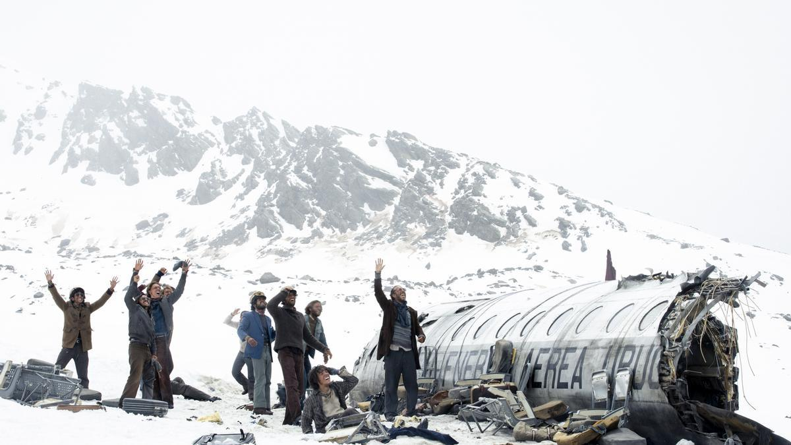
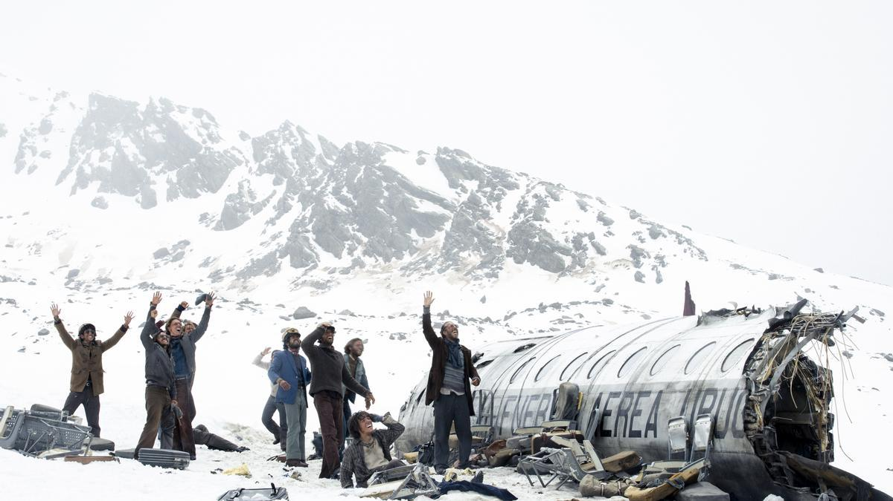
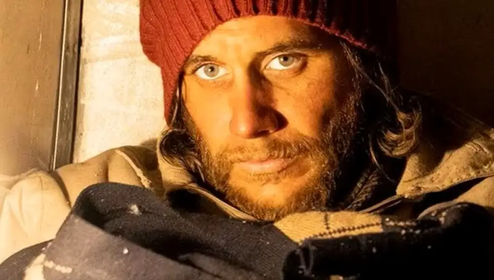

La sociedad de la nieve
Esta película sigue los hechos que sucedieron el 13 de octubre de 1972 cuando el vuelo 571 de la
Fuerza
Aérea Uruguaya se estrelló en El Valle de las Lágrimas, ubicado en la cordillera de los Andes en
Chile.
En este vuelo viajaban 45 personas, entre ellas 19 miembros del equipo de rugby Old Christians Club.
Los
pasajeros estuvieron en este valle 72 días sufriendo las inclemencias del clima, además de pasar
hambre
y diversas situaciones que pusieron en riesgo su vida.
Algo que causó conmoción cuando se supo sobre este caso es que las personas que estaban con vida,
como
una manera de seguir sobreviviendo y debido a la escasez de comida, tuvieron que cometer canibalismo
con
los cuerpos de los pasajeros que iban perdiendo la vida.
Todas estas personas lograron hacer una sociedad, de ahí el nombre de la película, para poder
sobrevivir
hasta que los rescataran, ya que establecieron reglas y se organizaron para poder salir a flote de
esta
terrible situación.
Casi dos meses después de estar sin comunicación, el 12 de diciembre Fernando Parrado, Roberto
Canessa y
Antonio José Vizintin decidieron hacer una caminata con la finalidad de encontrar a alguien que los
ayudara. Tras varios días caminando, Vizintin decidió regresar a los restos del avión, mientras que
Parrado y Canessa lograron encontrar a Sergio Catalán, un hombre que iba montando un caballo, a
quien
pidieron ayuda. Este hombre fue el encargado de notificar a las autoridades sobre los sobrevivientes
de
Los Andes.
El rescate se realizó el 23 de diciembre de 1972, tristemente solamente sobrevivieron 16 de los
pasajeros.
Trabajo en equipo
Como primer punto importante nos indican la importancia del trabajo en equipo que exige el rugby
como deporte y como el exito se basa en la fuerza del equipo y no las habilidades de unos pocos
destacados
El trabajo en equipo es como una sinfonía celestial, donde cada instrumento, único en su melodía, se
une en perfecta armonía para crear una composición majestuosa. Es el baile de las manos
entrelazadas, tejiendo un tapiz de esfuerzo compartido. Es el susurro de voces diversas, unidas en
un coro que eleva el espíritu. Es la danza de las mentes brillantes, entrelazando ideas para dar
vida a la innovación. En el trabajo en equipo, cada alma es una nota, pero juntas, forman una
sinfonía inigualable, una oda a la colaboración y al triunfo colectivo
Normas Sociales
Luego vemos la enfasis en el proceso de creacion de nuevas normas sociales, las normas sociales son reglas de comportamiento que establecen la manera en que las personas deben actuar en una sociedad o grupo social específico. Estas normas son desarrolladas y mantenidas por la sociedad para regular las interacciones y relaciones entre sus miembros. La creación de normas sociales en una sociedad puede ser un proceso complejo que involucra varios factores y agentes, las cuales no son fijas, varian segun con lo que la sociedad considere importante.
Grupo y Cohesion
La importancia de un grupo de personas y la coecion entre los mismos, un lazo que los una, compartir
valores y objetivos comunes.
La importancia de un grupo de personas y la cohesión entre ellas es como el tejido de un bello
tapiz, donde cada hilo, entrelazado con cuidado, forma una red de apoyo y pertenencia. En este
entramado, los corazones encuentran refugio, compartiendo valores y sueños que los unen en una danza
de cooperación y colaboración. Es un canto colectivo que eleva el espíritu, una comunión de almas
que encuentra su fuerza en la unión y su belleza en la armonía compartida. Es la poesía de la
conexión humana, donde cada individuo es una estrella que brilla con luz propia, pero juntos, forman
un resplandeciente universo de solidaridad y amor.
 

Liderazgo
El liderazgo es la capacidad de una persona para guiar, influir y motivar a otros en la consecución de metas y objetivos comunes. Implica tomar decisiones, comunicarse de manera efectiva, inspirar confianza, resolver conflictos y fomentar un ambiente de trabajo positivo, sin embargo lideres innesperados aparecen en situaciones adversas. Un buen líder es capaz de identificar las fortalezas individuales de su equipo y potenciarlas, así como de brindar apoyo y orientación en momentos difíciles.
El Sufrimiento
El ser humano esta dispuesto a sufrir con la condicion de que dicho sufrimiento sirva de algo. Esta
afirmación refleja una perspectiva común sobre la disposición del ser humano a sufrir con la
esperanza de que ese sufrimiento tenga un propósito significativo o traiga consigo un beneficio.
Algunas reflexiones sobre este tema incluyen:
Sentido de propósito: Muchas personas están dispuestas a enfrentar el sufrimiento si perciben que
eso contribuirá a un propósito mayor, como alcanzar una meta significativa, apoyar a otros o superar
desafíos personales.
Crecimiento personal: Algunas personas ven el sufrimiento como una oportunidad para crecer, aprender
lecciones importantes y fortalecer su resiliencia emocional.
Altruismo y empatía: El sufrimiento propio puede ser tolerado si se percibe que ayudará a aliviar el
sufrimiento de otros, lo que refleja un sentido de empatía y altruismo.
Valores y creencias: Para muchas personas, el sufrimiento puede ser aceptado si está alineado con
sus valores y creencias personales, como la lealtad, el compromiso o la búsqueda de la verdad.
El Amor
El maximo acto de amor es dar la vida por los demas, sentirse en paz con uno mismo y aceptar el destino que te espera Estar dispuesto a darlo todo por las personas amadas, dar sin esperar nada a cambio
Elenco